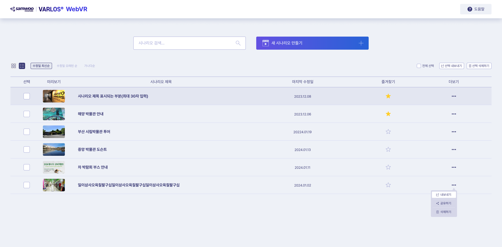
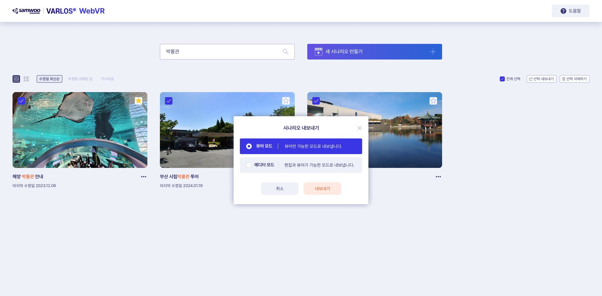
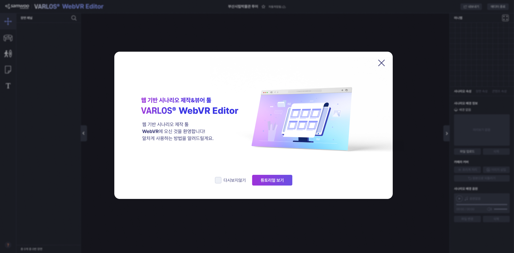
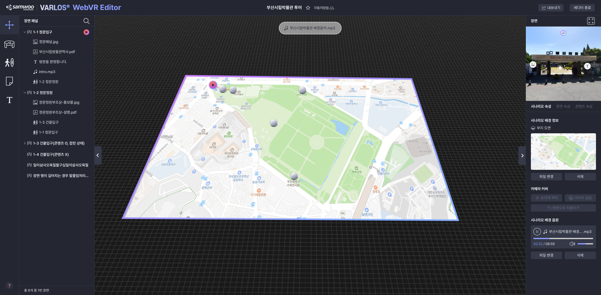
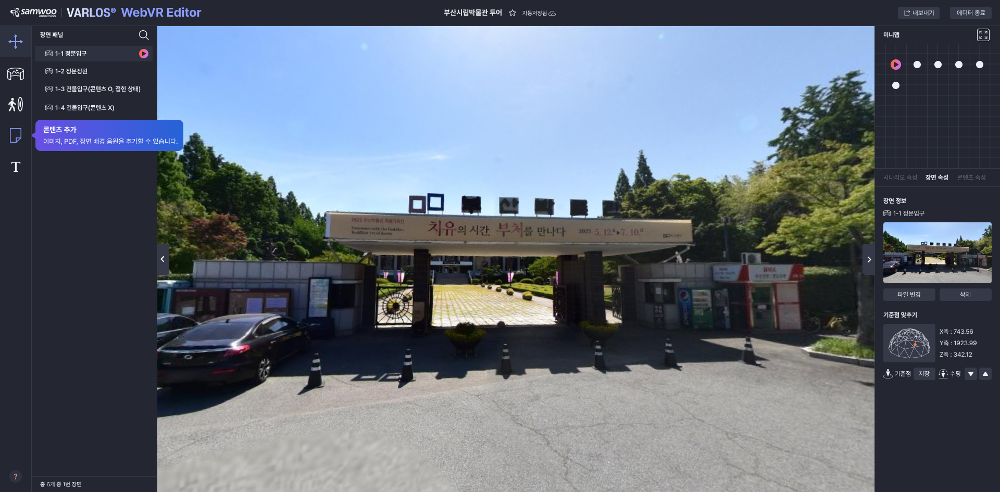
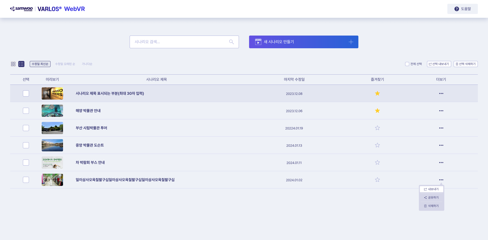
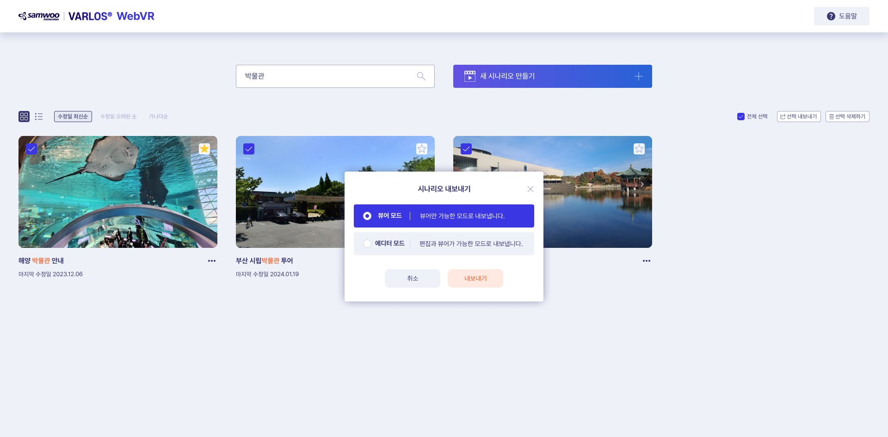
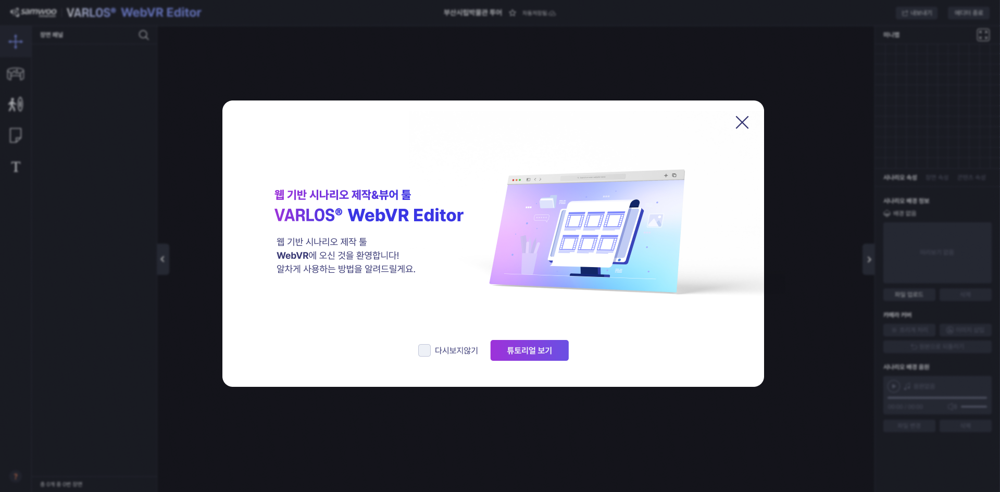
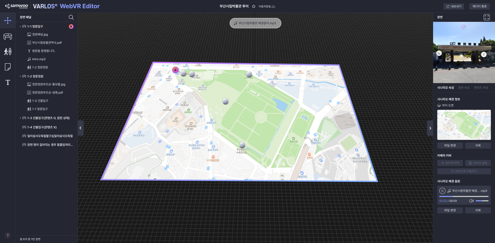
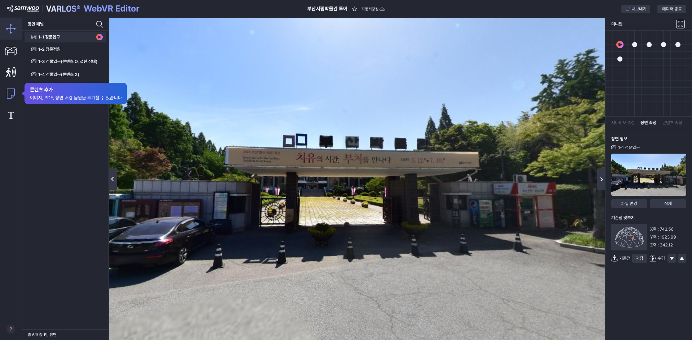

국립과학수사연구원 웹 기반 VR 에디터 개발
2023.08 ~ 2024.04
-
✦ 클라이언트 ✦
국립과학수사연구원 본원
-
✦ 담당 업무(기여도) ✦
UX/UI 기획 및 디자인(100%), 퍼블리싱(100%)
-
✦ 사용 기술 ✦
figma, AdobeXD, photoshop, illustrator
HTML, CSS, JavaScript
- WebVR Editor는 사용자가 웹 상에서 VR 시나리오를 작성하고 HMD를 통해 VR 환경에서 시나리오를 실행할 수 있게 하는 웹 기반 VR 에디터입니다. 1단계는 연구과제, 2단계는 고도화 프로젝트로 진행되었습니다.
- 1단계 연구과제 세부 개발이 진행되는 단계에서 내부적으로 사용하기 어렵다는 피드백이 있어 UX를 개선하여 UI를 디자인하고 퍼블리싱하는 업무를 담당하게 되었습니다. 이미 세부개발이 꽤 진행된 상태였기 때문에 기한 내에 적용이 가능한 정도로 직관적인 사용에 중점을 두고 개선하여 납품하였습니다.
- 이후 WebVR Editor를 솔루션으로 발전시키는 과정에서 국립과학수사연구원의 고도화 프로젝트 요청이 있었고, 1단계 프로젝트에서 아쉬움을 느꼈던 사용성을 개선하고 범용적으로 활용이 가능하게끔 기획 및 디자인하였습니다.
-
+ 1단계 사업(배포) +


-
+ 2단계 사업(고도화 기획 단계) +
 









CONTECT DEVELOPMENT AND DESIGN ✦ CONTECT DEVELOPMENT AND DESIGN ✦ CONTECT DEVELOPMENT AND DESIGN ✦ CONTECT DEVELOPMENT AND DESIGN ✦ CONTECT DEVELOPMENT AND DESIGN ✦ CONTECT DEVELOPMENT AND DESIGN ✦ CONTECT DEVELOPMENT AND DESIGN ✦ CONTECT DEVELOPMENT AND DESIGN ✦ CONTECT DEVELOPMENT AND DESIGN ✦